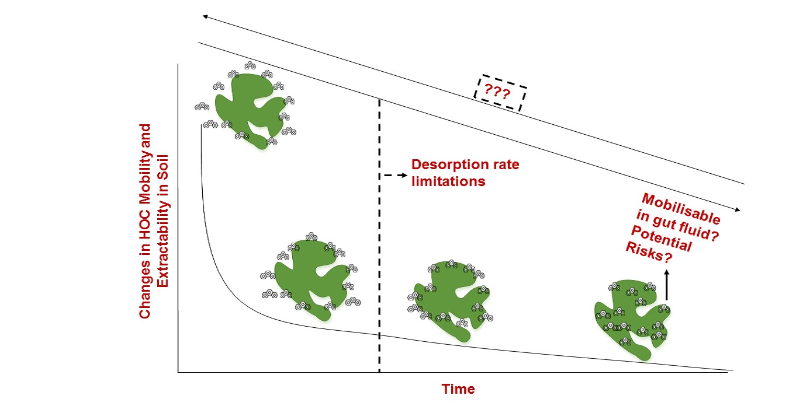

 Bioavailability is the fraction of organic contaminants that crosses from the environment inhabitated by an organism into an internal site of toxic action. Another concept which is semantically similar to bioavailability is bioaccessibility. For a contaminant to be bioaccessible, it must first be dissolved in the gut fluid. A fraction of the dissolved concentration then passes through the intestinal membrane to become bioavailableAnother concept which is semantically similar to bioavailability is bioaccessibility. For a contaminant to be bioaccessible, it must first be dissolved in the gut fluid. A fraction of the dissolved concentration then passes through the intestinal membrane to become bioavailableAnother concept which is semantically similar to bioavailability is bioaccessibility. For a contaminant to be bioaccessible, it must first be dissolved in the gut fluid. A fraction of the dissolved concentration then passes through the intestinal membrane to become bioavailableAnother concept which is semantically similar to bioavailability is bioaccessibility. For a contaminant to be bioaccessible, it must first be dissolved in the gut fluid. A fraction of the dissolved concentration then passes through the intestinal membrane to become bioavailableAnother concept which is semantically similar to bioavailability is bioaccessibility. For a contaminant to be bioaccessible, it must first be dissolved in the gut fluid. A fraction of the dissolved concentration then passes through the intestinal membrane to become bioavailable.
Bioavailability is organism and site specific. Different values for bioavailability has been reported by various authors.Another concept which is semantically similar to bioavailability is bioaccessibility. For a contaminant to be bioaccessible, it must first be dissolved in the gut fluid. A fraction of the dissolved concentration then passes through the intestinal membrane to become bioavailableAnother concept which is semantically similar to bioavailability is bioaccessibility. For a contaminant to be bioaccessible, it must first be dissolved in the gut fluid. A fraction of the dissolved concentration then passes through the intestinal membrane to become bioavailableAnother concept which is semantically similar to bioavailability is bioaccessibility. For a contaminant to be bioaccessible, it must first be dissolved in the gut fluid. A fraction of the dissolved concentration then passes through the intestinal membrane to become bioavailableAnother concept which is semantically similar to bioavailability is bioaccessibility. For a contaminant to be bioaccessible, it must first be dissolved in the gut fluid. A fraction of the dissolved concentration then passes through the intestinal membrane to become bioavailable
Another concept which is semantically similar to bioavailability is bioaccessibility. For a contaminant to be bioaccessible, it must first be dissolved in the gut fluid. A fraction of the dissolved concentration then passes through the intestinal membrane to become bioavailable.Another concept which is semantically similar to bioavailability is bioaccessibility. For a contaminant to be bioaccessible, it must first be dissolved in the gut fluid. A fraction of the dissolved concentration then passes through the intestinal membrane to become bioavailableAnother concept which is semantically similar to bioavailability is bioaccessibility. For a contaminant to be bioaccessible, it must first be dissolved in the gut fluid. A fraction of the dissolved concentration then passes through the intestinal membrane to become bioavailableAnother concept which is semantically similar to bioavailability is bioaccessibility. For a contaminant to be bioaccessible, it must first be dissolved in the gut fluid. A fraction of the dissolved concentration then passes through the intestinal membrane to become bioavailableAnother concept which is semantically similar to bioavailability is bioaccessibility. For a contaminant to be bioaccessible, it must first be dissolved in the gut fluid. A fraction of the dissolved concentration then passes through the intestinal membrane to become bioavailable
Another concept which is semantically similar to bioavailability is bioaccessibility. For a contaminant to be bioaccessible, it must first be dissolved in the gut fluid. A fraction of the dissolved concentration then passes through the intestinal membrane to become bioavailable.Another concept which is semantically similar to bioavailability is bioaccessibility. For a contaminant to be bioaccessible, it must first be dissolved in the gut fluid. A fraction of the dissolved concentration then passes through the intestinal membrane to become bioavailableAnother concept which is semantically similar to bioavailability is bioaccessibility. For a contaminant to be bioaccessible, it must first be dissolved in the gut fluid. A fraction of the dissolved concentration then passes through the intestinal membrane to become bioavailableAnother concept which is semantically similar to bioavailability is bioaccessibility. For a contaminant to be bioaccessible, it must first be dissolved in the gut fluid. A fraction of the dissolved concentration then passes through the intestinal membrane to become bioavailableAnother concept which is semantically similar to bioavailability is bioaccessibility. For a contaminant to be bioaccessible, it must first be dissolved in the gut fluid. A fraction of the dissolved concentration then passes through the intestinal membrane to become bioavailable
Another concept which is semantically similar to bioavailability is bioaccessibility. For a contaminant to be bioaccessible, it must first be dissolved in the gut fluid. A fraction of the dissolved concentration then passes through the intestinal membrane to become bioavailable.Another concept which is semantically similar to bioavailability is bioaccessibility. For a contaminant to be bioaccessible, it must first be dissolved in the gut fluid. A fraction of the dissolved concentration then passes through the intestinal membrane to become bioavailableAnother concept which is semantically similar to bioavailability is bioaccessibility. For a contaminant to be bioaccessible, it must first be dissolved in the gut fluid. A fraction of the dissolved concentration then passes through the intestinal membrane to become bioavailableAnother concept which is semantically similar to bioavailability is bioaccessibility. For a contaminant to be bioaccessible, it must first be dissolved in the gut fluid. A fraction of the dissolved concentration then passes through the intestinal membrane to become bioavailableAnother concept which is semantically similar to bioavailability is bioaccessibility. For a contaminant to be bioaccessible, it must first be dissolved in the gut fluid. A fraction of the dissolved concentration then passes through the intestinal membrane to become bioavailable
Another concept which is semantically similar to bioavailability is bioaccessibility. For a contaminant to be bioaccessible, it must first be dissolved in the gut fluid. A fraction of the dissolved concentration then passes through the intestinal membrane to become bioavailable.Another concept which is semantically similar to bioavailability is bioaccessibility. For a contaminant to be bioaccessible, it must first be dissolved in the gut fluid. A fraction of the dissolved concentration then passes through the intestinal membrane to become bioavailableAnother concept which is semantically similar to bioavailability is bioaccessibility. For a contaminant to be bioaccessible, it must first be dissolved in the gut fluid. A fraction of the dissolved concentration then passes through the intestinal membrane to become bioavailableAnother concept which is semantically similar to bioavailability is bioaccessibility. For a contaminant to be bioaccessible, it must first be dissolved in the gut fluid. A fraction of the dissolved concentration then passes through the intestinal membrane to become bioavailable
Back to top: Back to Top